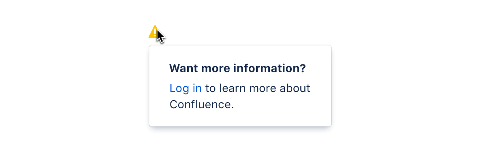
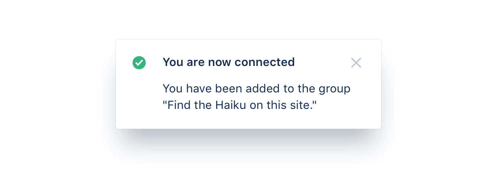
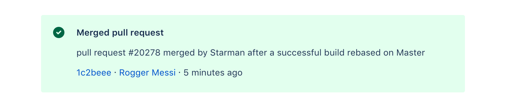
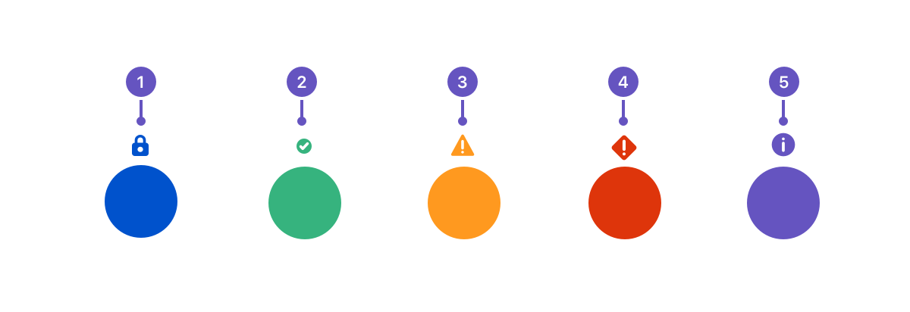
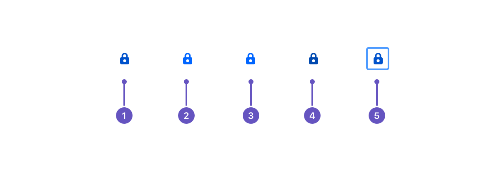

Messages
Use messages to communicate conditions, indicate an event, or show responses to user actions.
Message content can include authentication, information, confirmation, warnings, and error messages. It is important to specify which type of content the message falls under in order to choose the relevant color and correct icon.
Message types
Banners
Banners appear at the top of the screen and shift the content below it. They should only be used for critical system-level messaging (warnings and errors) about loss of data or functionality. Learn more about banners.
Inline dialogs
Inline dialogs consist of an icon and a message that's revealed when a user hovers over the icon. Use inline dialogs to alert people to a required action or important information. Learn more about inline dialogs.
Flags
Flags are used for confirmations, alerts, and acknowledgments that require minimal user interaction. These event-driven messages appear by overlaying content at the bottom left of the screen, emerging from the navigation sidebar. Learn more about flags.
Section messages
Section messages are used to alert the user of something that has happened in a specific section of the screen. They appear above the affected area (for example, Issue experience in Jira). Learn more about section messages.
Colors
Message types are assigned appropriate colors and icons to help indicate content and urgency. The available message types are authentication, confirmation, warning, error, and information. Setting the right color and icon for a message ensures people understand the nature of the message at a glance, and that they take appropriate action.
- Authentication (B400):Allows the user to verify their identity.
- Confirmation (G300):Provides a positive response to user actions.
- Warning (Y300):Used to help users avoid error situations. Consists of a description of potential errors. It should provide a recommended next step, and an option to be reminded at a later date.
- Error (R300):Shown when something goes wrong, or when the user is denied access. This should also provide recommended next steps, or a path forward.
- Information (P300):Conveys information to help the user understand minor contextual or state changes. These are typically not in response to a user action.
Icons
The appearance of icons changes depending on the current state. This visual indicator makes it easier for people to interpret the message.
- Resting:
- Hover:
- Selected:
- Active:
- Focus:
Powered by a free JigsawOffice license. Please consider purchasing it today